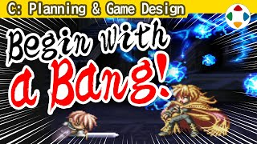
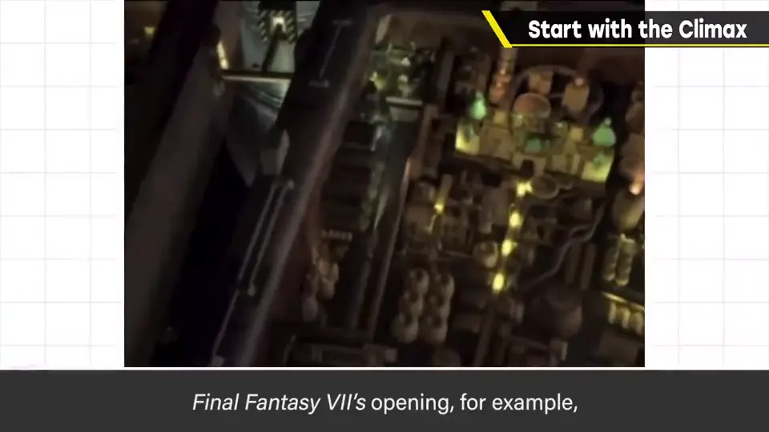
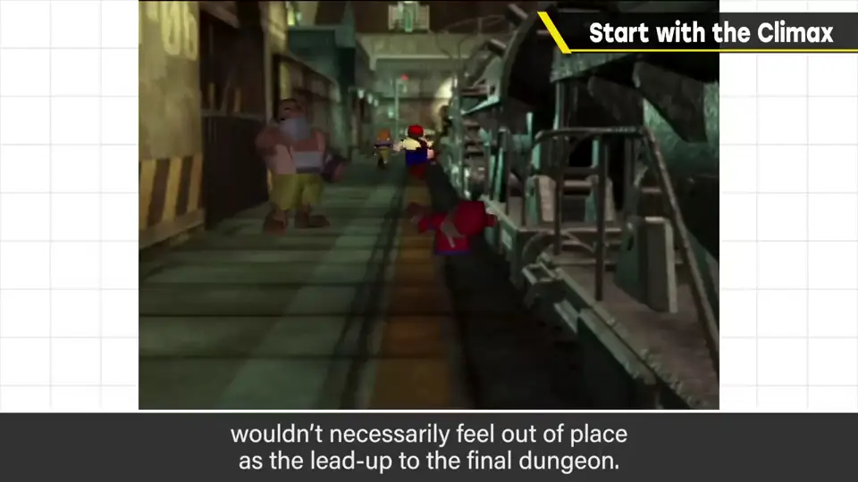
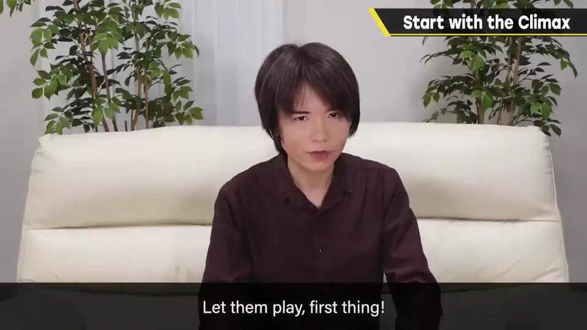
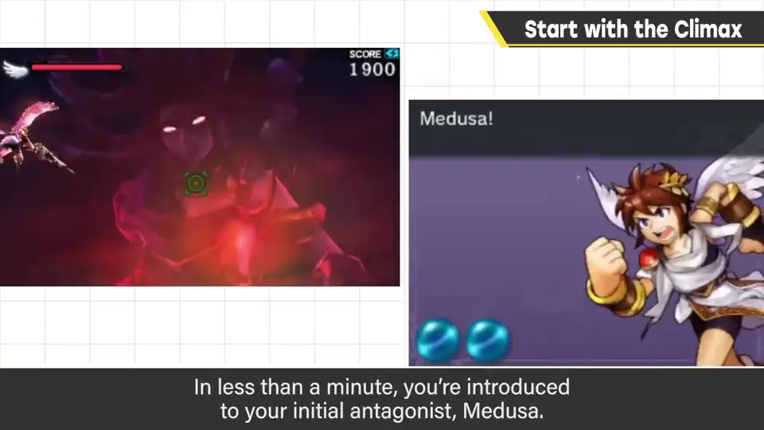
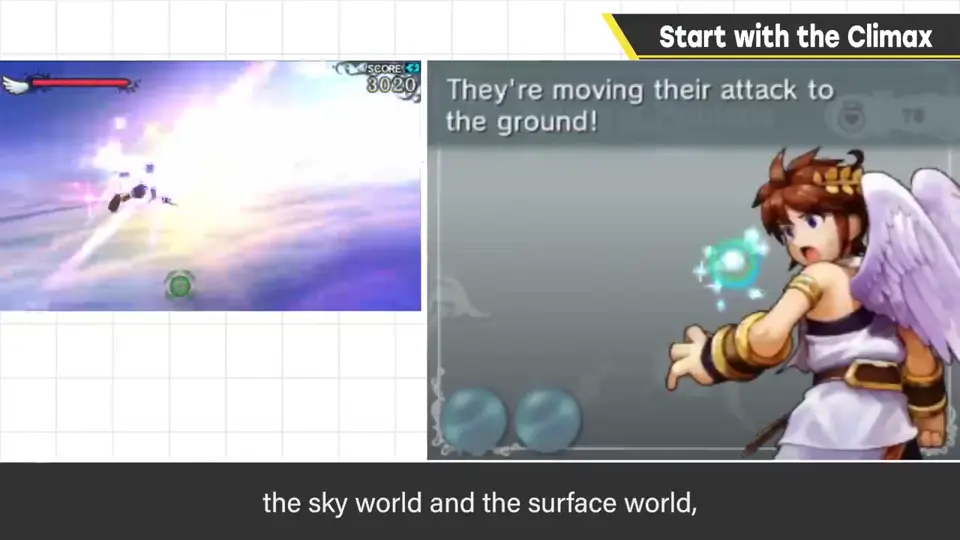
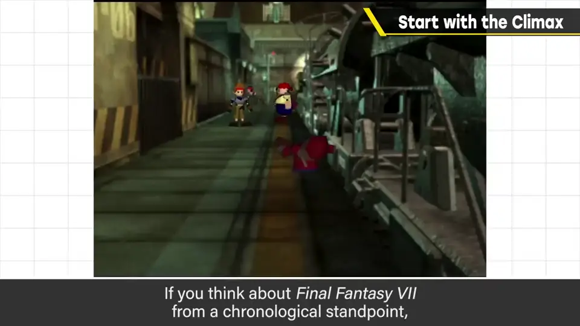
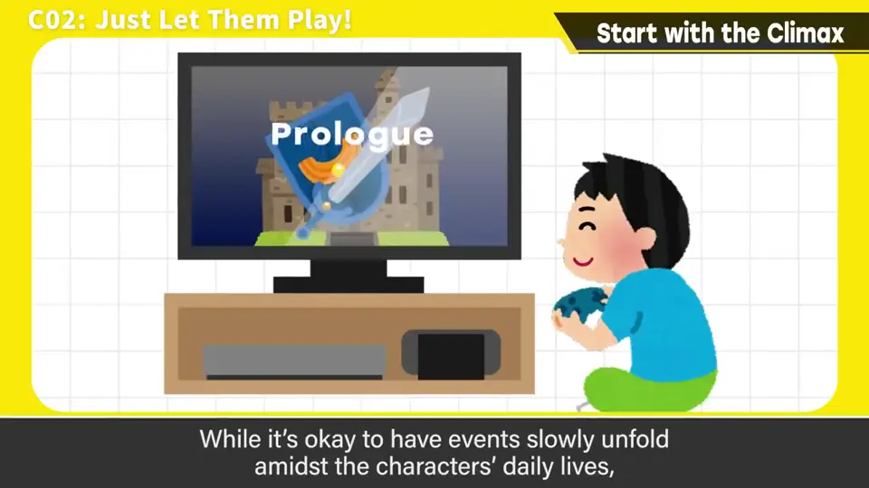
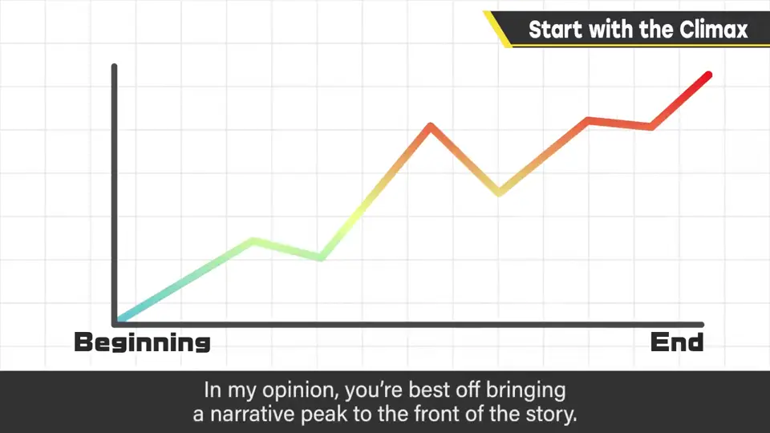

速览
做游戏的话，可能的话考虑一上来就带出高潮——当然不是说一开始就和最终 Boss 战斗（想这样也可以）。游戏的导入非常重要：《最终幻想 VII》的开场，作为最终迷宫前的展开大概也毫不违和吧？但整体上起步慢的游戏仍然很多：主角的成长经历、世界的习俗、与朋友的互动持续很久。电影也是，若有事件发生，就立刻从那里展示，之前的阶段之后再展示更好。特别是游戏，人们很想「先让我操作看看是什么游戏」，没时间慢慢来——先让玩家操作，可以的话展示敌军的真本事。《新·光神话 帕尔提娜之镜》第 1 章一开始就开门进入空战，不到 1 分钟最终 Boss 美杜莎就现身——当然也交代了还不是对决的时候；与帕尔提娜的关系、天界与人间、空战与地面战、奇迹（技能）等开头似乎会有的说明，大胆省略后就开始了。《FF7》若按时间顺序，一般会去讲克劳德为何加入雪崩，但它从看点开始。日常中慢慢发生事件也可以，但那样的话就要迅速把接力棒交给游戏。意识到把山场放在最开头很好；构成上有难度时，至少让序章很短就结束。《逆转裁判》也是一开始就从审判开始。抱着让玩家从一开始就清醒过来的心态去做吧。
1. 导入非常重要 0:04
做游戏的话，如果可能，考虑一上来就带出高潮。当然不是说要一开始就让玩家和最终 Boss 战斗——想这么做也行。
游戏的导入非常重要。《最终幻想 VII》的开场，作为最终迷宫前的展开大概也毫不违和吧？


2. 许多游戏起步太慢 0:42
但整体上，起步慢的游戏仍然很多：主角的成长经历、世界的习俗、和朋友的互动等，长时间持续。

3. 帕尔提娜第 1 章 1:12
《新·光神话 帕尔提娜之镜》第 1 章：开始后立刻打开门进入空中战，不到 1 分钟，初期的大反派、最终 Boss 美杜莎就登场了。


当然也交代了现在还不是和她对决的时候。但像皮特与帕尔提娜的关系、天界与人间、空中战与地面战、奇迹（技能）等，开头似乎该有的说明都大胆省略，直接开始。
4. FF7：从看点开始 1:50
《FF7》若按时间顺序思考，一般会做成先讲克劳德为什么加入雪崩之类，但它是从看点开始的。


在日常中慢慢发生事件也可以；但那样的话，就要迅速把接力棒交给游戏。

自测题
1. 「从高潮开始」是什么意思？
尽可能一开始就带出精彩的看点、先让玩家操作，前因后果之后再交代。 0:04
2. 《新·光神话 帕尔提娜之镜》第 1 章如何开场？
开门立即空战，不到 1 分钟最终 Boss 美杜莎就登场，大胆省略开头的种种说明。 1:12
3. 如果构成上难以把高潮放在开头，至少该怎么做？
让序章非常短，并迅速把操作交给玩家。 2:08